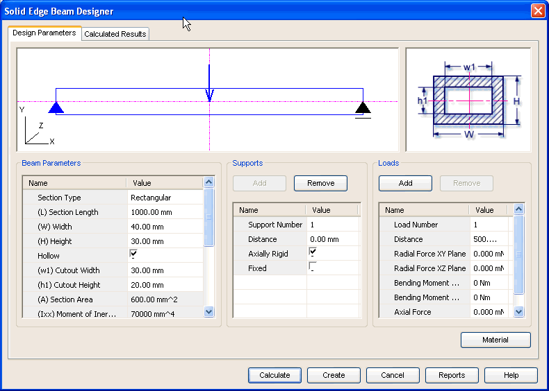

Beam Design Parameters tab
The Design Parameters tab provides the options you use to enter details required for the design of the beam. This tab consists of 6 areas.

- Graphic area 1
-
This area contains the graphical representation of the beam. The area gives information on the number of forces, number of supports and support type for the current information provided.
- Graphic area 2
-
This area contains the graphical representation of section type and the parameters that define the size and shape of the section.
- Beam parameters
-
Use this area to define the parameters for the section like section type, section length and other dimensions. This area also displays the results related to geometry of the section.
- Supports
-
Use this area to edit the support type and location of supports on the beam.
- Loads
-
Use this area to define number of forces, various components of each force and their location on the beam.
- Material
-
Use the Material button to select the material of the beam.